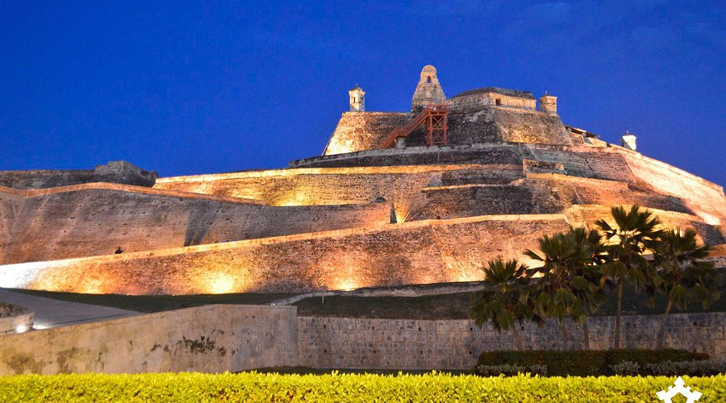
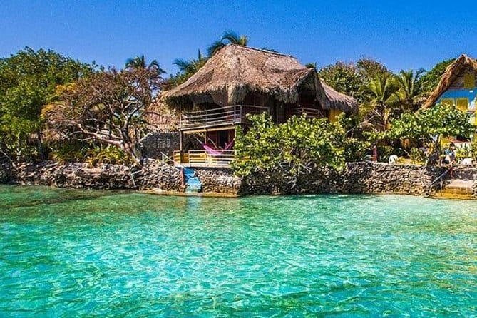
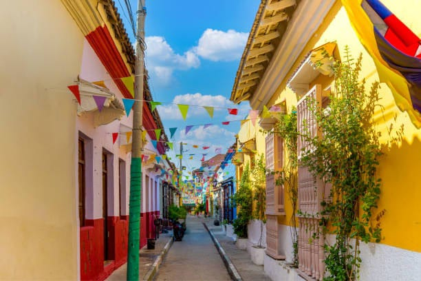

CARTAGENA DE INDIAS
Cartagena de Indias is one of the most important and visited cities in Colombia. It is located on the Caribbean coast and is known for its history, beaches, colonial architecture and rich culture.
Its historic center, surrounded by ancient walls, preserves streets, squares, churches and buildings that recall the colonial past of the city.
Cartagena combines history and modernity. Its neighborhoods, restaurants, beaches and cultural spaces make this city an ideal destination to discover different sides of Colombia.
Caribbean Coast of Colombia
1533
Caribbean
Tropical and warm
HISTORY
A city with centuries of history
Cartagena was founded in 1533 by Pedro de Heredia. Due to its strategic location in the Caribbean, it quickly became an important port during the colonial period.
For several centuries, the city had great commercial and military importance. To protect it from attacks, enormous walls, fortresses and defensive structures were built.
Today, much of this heritage can be visited and is an important part of Cartagena's identity.
Founding of Cartagena
FEATURED PLACES

WALLED CITY
Colonial streets, squares and historic architecture in the heart of Cartagena.

SAN FELIPE CASTLE
One of the most important fortresses in the history of Cartagena.

ROSARIO ISLANDS
Beaches, crystal-clear waters and natural landscapes of the Colombian Caribbean.

GETSEMANI
A neighborhood full of art, music, colors and cultural life.
CULTURE AND GASTRONOMY
CULTURE
Cartagena has a culture influenced by Caribbean, African, indigenous and Spanish traditions.
GASTRONOMY
Traditional dishes include coconut rice, fried fish, plantains, ceviche and different preparations from the Caribbean.
MUSIC
Caribbean rhythms are an important part of everyday life and celebrations in the city.
WHY VISIT CARTAGENA?
History
Discover centuries of history through its walls and historic buildings.
Beaches
Enjoy the Caribbean Sea and its tropical landscapes.
Landscapes
Find colorful places that are ideal for exploring and taking photos.
Culture
Experience the traditions, flavors and expressions of the Colombian Caribbean.